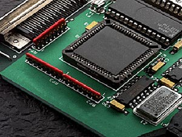

History
Since the advent of the written word, it was the custom, certainly among European civilisations, that when representing the date on any document to write the year by the short and simple 2-digit representation. When these dates passed a millennium boundary, i.e. from '99 to '00, most people, through common sense, were able to interpret the year change correctly (1799-1800, 1899-1900, etc) and any calculation associated with it by including, where necessary, the century part of the year in question. With the advent of digital stored program computers in the late 1940s and early 1950s, this shorthand notation for the indication of the year portion of the date was similarly used, primarily because this type of date nomenclature took up less space in the computer's memory. This was particularly important at the time when computer memory RAM [1] and storage media (tape and disk) was at a premium.
The Manchester University 'Baby' Computer [2] was possibly the first computer back in 1948 to contain a 'Millennium Bug'" in its software code.
|
|
||||||||
|
||||||||
Fig 1. The Manchester University 'Baby' Computer
Since that time, millions of lines of software code have been written by software engineers who, being the breed that they are, were quite happy to reuse code and software routines they had used or written in the past that manipulated the date character fields using only the two digit year representation. The net result was that almost every computer system in the world at the beginning of this new millennium was found to contain software packages that would not function correctly because they could not process the rollover or added leap year date correctly. In the latter case, full implementation of the three leap year rules was ignored to conserve software code. (If a year is divisible by 4 it is normally a leap year, unless that year is also divisible by 100. However, if the year is also divisible by 400, then it becomes a leap year [3].
Many books and articles have been written about the computer problems associated with this Millennium Bug [4], but in the midst of this is the Embedded System or Chip. These devices are no more than small microcomputers running a single or dedicated task. They contain their software code embedded into the microprocessor itself or contained in an adjacent ROM [5] device. There are countless examples of such devices containing Embedded Systems. Probably the best known isthe domestic video recorder followed by traffic signals and central heating timers.

Fig 2. An Example of an Embedded Silicon Chip System
But what sort of numbers of Embedded Chips are we talking about?
It is estimated that there are currently 24-25 billion (that's 25 with 9 '0's) embedded chips in the world today. With the world population currently at about 6 billion [6] people, simple mathematics shows that there are over four Embedded Chips or Systems for every man woman and child on this planet. Towards the end of the last millennium it was estimated by the computer experts that about 2 - 5% of these devices would have had a date related function, and hence could possibly fail around the Millennium rollover. That is in excess of 10 billion devices that had to be found, tested and where necessary replaced. Considering the number of devices in question and the associated problem of locating them all, it was an enormous task.
© Copyright British Telecommunications plc 1999